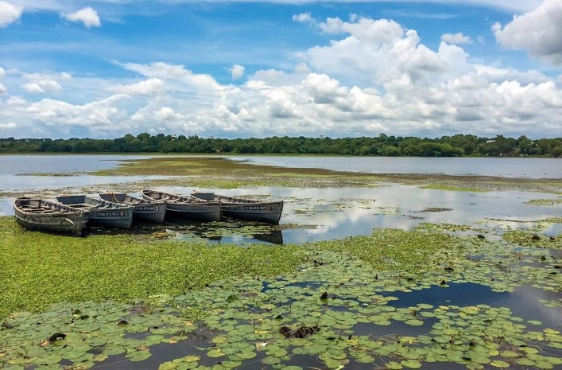
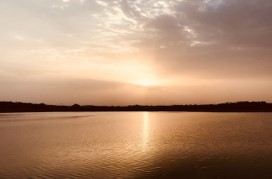

Futala Lake is a lake in Nagpur in the Indian state of Maharashtra. The lake covers 60 acres (24 ha). Built by the Bhosle kings of Nagpur, the lake is known for its coloured fountains. In the evenings the site is illuminated with halogen lights and Tanga (carriage) rides. The lake is surrounded on three sides by forest and a landscaped beach on the fourth side. In the western area of Nagpur, ancient Futala Lake has existed for 200 years. In the absence of maintenance, the use of this prehistoric lake was limited to cattle washing only. It was therefore decided in 2003 to beautify this lake from NIT funds with equal aid from the state government.
Timing : 7 AM to 7 PM

